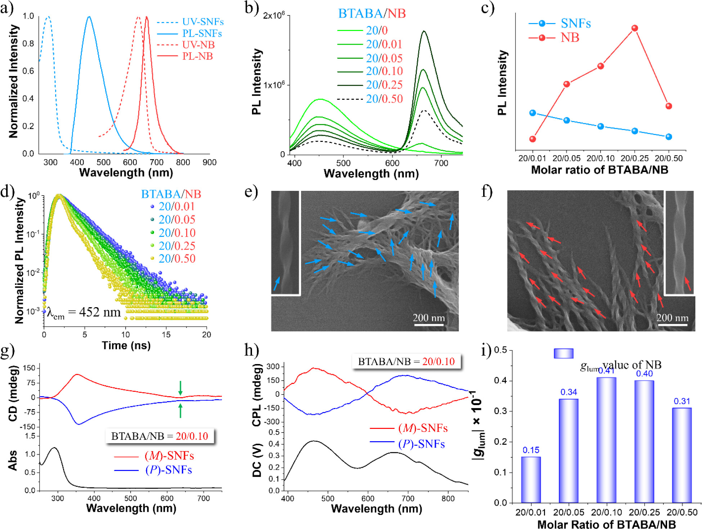
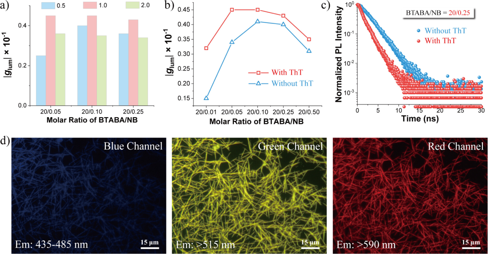
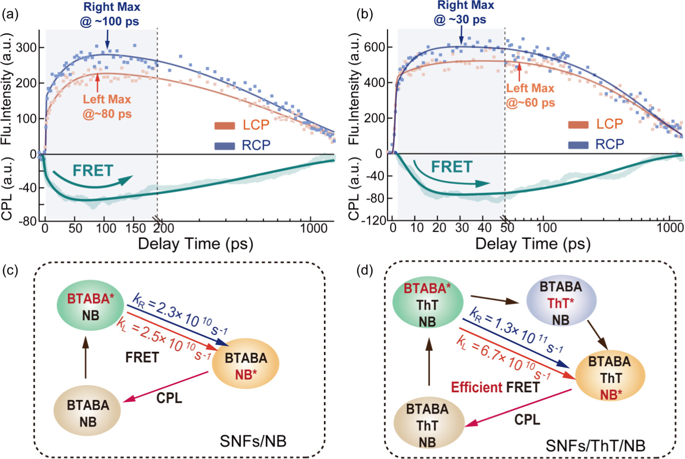

手性是一种普遍现象，从亚原子粒子如中微子到宏观生物系统乃至星系，手性结构在自然界中跨越不同尺度存在。手性传递在生物系统及生物进化中的许多重要物理和化学过程中起着关键作用， 与地球上的生命密切相关。这一现象在不对称催化、手性识别、非手性客体分子的传感、超分子手性操纵以及新型手性功能分子或材料的开发等领域有着广泛的应用。手性传递被认为可以通过 基态构象调节或通过激发态过程（如电子或能量转移、电子自旋反转、电-磁场相互作用和偶极-偶极相互作用）来实现。
图1. (a) SNFs（蓝色）和NB（红色）的归一化吸收（虚线）和发射（实线）光谱。BTABA的浓度为5.29 mM，溶剂为DMF/H2O（体积比7/4）。NB的浓度为0.02 mM，溶剂为甲醇。 (b) 随着NB摩尔比增加，SNFs的PL光谱变化。激发波长为330 nm。(c) 探测到的相对发射强度在452 nm（SNFs的发射）和666 nm（NB的发射）处与BTABA/NB摩尔比的关系图。 (d) 不同摩尔比NB的SNFs的荧光衰减。激发波长为344 nm，探测波长为452 nm。(e,f) P型和M型螺旋结构的BTABA/NB共组装体的SEM图像。(g) SNFs/NB的CD光谱。绿色箭头指示NB的最大吸收。 (h) SNFs/NB的CPL光谱。摩尔比为20/0.10。(i) 不同摩尔比下NB（在666 nm处）对应的g值。
对于跨学科研究而言，阐明生物组装体中观察到的有效手性和能量转移过程的潜在机制具有重要意义。手性研究面临的挑战包括如何实现手性和能量转移动力学的同时实时监测，以及如何区分这些 过程是在基态还是激发态发生的。在此，本课题组首次尝试利用飞秒时间分辨圆偏振发光光谱（FS-TRCPL），在近红外圆偏振发光超分子纳米纤维（SNFs）中，实时观察共振能量转移（FRET）和 圆偏振发光（CPL）生成之间的协同超快动力学。本文研究结果揭示了FRET和CPL发射之间存在协同相互作用，其时间尺度从几皮秒到几百皮秒不等。特别值得注意的是，我们发现在SNFs中产生0.045的 glum值的关键机制是左旋和右旋圆偏振发射通道之间的FRET速率差异，这超出了电子和磁偶极子关系的传统认知。
图2. (a) SNFs/NB组装体（在666 nm处）的glum值随ThT摩尔比的变化。(b) 有无ThT时NB（在666 nm处）的glum值。BTABA/ThT的摩尔比为20/1.0。 (c) 有无ThT时NB的荧光衰减。BTABA/ThT/NB的摩尔比为20/1.0/0.10。激发和探测波长分别为344 nm和666 nm。(d) SNFs/ThT/NB共组装体在不同激发通道下的荧光显微镜图像。
我们发现，手性螺旋结构导致LCP和RCP发射在能量转移过程中的方向因子（κ）不同，从而使得这两个发射通道的FRET速率不同，这种差异在FRET过程中引入了额外的发射不对称性，增加了FS-TRCPL信号 强度，有助于提高CPL的g值。此外，引入“能量桥”ThT后，FRET速率常数提高了约50%，使得SNFs在近红外CPL发射中达到了0.045的显著g值。这些发现不仅增进了对CPL生成和g值放大的基本机制的理解， 还为未来CPL材料的设计和调控提供了宝贵的见解。
图3. (a) SNFs/NB的左旋圆偏振（LCP）和右旋圆偏振（RCP）发射（上图）以及TRCPL动力学（下图），探测波长为695 nm。 (b) SNFs/ThT/NB的LCP和RCP发射（上图）以及TRCPL动力学（下图），探测波长为695 nm。(c) SNFs/NB的光物理过程。 (d) SNFs/ThT/NB的光物理过程（kL和kR分别定义为从LCP和RCP荧光上转换动力学得到的k=1/τ1）。使用M型SNFs，溶剂为DMF/H2O（体积比7/4）。[BTABA]=5.29 mM。BTABA/NB的摩尔比为20/0.25。BTABA/ThT/NB的摩尔比为20/1.0/0.25。
图4. 该图解展示了SNFs/NB和SNFs/ThT/NB中涉及的光物理过程
转载文章请注明出处：国家纳米科学中心段鹏飞老师课题组 https://duanpengfei-chirality.com/